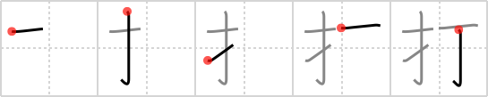

打
← →
strike

Reading:
On-Yomi: ダ、ダアス — Kun-Yomi: う.つ、う.ち-、ぶ.つ
Heisig story:
Finger . . . spike.
Koohii stories:
1) [fuaburisu] 30-1-2007(258): You're using a hammer to drive a nail into a plank, but you miss and strike your fingers, ouch ! PS: the character does not mean "to go on strike", it will be very helpful in the long run to create images that convey the proper sense of the character!
2) [Wosret] 23-2-2009(43): My teacher used to strike my fingers with a street sign.
3) [mspertus] 8-6-2006(31): To do the most damage when you strike someone, use your "fingernail" (finger-nail).
4) [dshill99] 16-5-2008(21): Your finger nails strike the keyboard when you type. 打つ 【うつ】 to hit (something inanimate), to beat, to type.
5) [blaked569] 5-4-2009(17): Your finger or the nail. Which will the hammer strike?